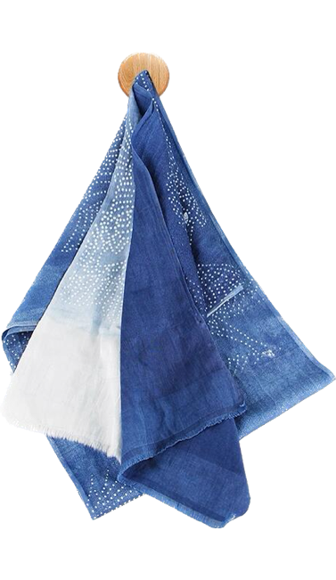

蓝印花布——中国传统工艺印染品
蓝印花布是中国的一种工艺品，是传统的镂空版白浆防染印花， 又称靛蓝花布，俗称药斑布、浇花布等。是中国传统的工艺印染品，镂空版白浆防染印花，距今已有一千三百年历史，主产地包括江苏省南通市 、浙江省桐乡市 、湖南省邵阳市 、山东省兰陵县 等地。 最初以蓝草为染料印染而成，蓝印花布用石灰、豆粉合成灰浆烤蓝，采用全棉、全手工纺织、刻版、刮浆等多道印染工艺制成。
蓝印花布是中国的一种工艺品，是传统的镂空版白浆防染印花， 又称靛蓝花布，俗称药斑布、浇花布等。是中国传统的工艺印染品，镂空版白浆防染印花，距今已有一千三百年历史，主产地包括江苏省南通市 、浙江省桐乡市 、湖南省邵阳市 、山东省兰陵县 等地。 最初以蓝草为染料印染而成，蓝印花布用石灰、豆粉合成灰浆烤蓝，采用全棉、全手工纺织、刻版、刮浆等多道印染工艺制成。
蓝印花布是中国的一种工艺品，是传统的镂空版白浆防染印花， 又称靛蓝花布，俗称药斑布、浇花布等。是中国传统的工艺印染品，镂空版白浆防染印花，距今已有一千三百年历史，主产地包括江苏省南通市 、浙江省桐乡市 、湖南省邵阳市 、山东省兰陵县 等地。 最初以蓝草为染料印染而成，蓝印花布用石灰、豆粉合成灰浆烤蓝，采用全棉、全手工纺织、刻版、刮浆等多道印染工艺制成。
历史演变
蓝印花布源于秦汉，兴盛于商业发达的唐宋时期，《古今图书集成》卷中记载:"药斑布--以布抹灰药而染青，候干，去灰药，则青白相间，有人物、花鸟、诗词各色，充衾幔之用。"
在资本主义萌芽的明清之际，药斑布已普遍流行于民间，所以《古今图书集成》物产考曰:"药斑布俗名浇花布，今所在皆有之。"《光绪通州志》记载:"种蓝成畦，五月刈曰头蓝， 七月刈曰二蓝甓一池水，汲水浸入石灰，搅千下，戽去水，即成靛，用以染布，曰小缸青。"
现代所见蓝印花布的样式，多数为明清一代的作品。这些以蓝印花布制成的蚊帐、被面、包袱、头巾、 门帘等生活用品，朴素大方、色调清新明快，图案淳朴典丽，曾深受欢迎。因此，染坊业一度成为地方上的显业。
史载宋元之际桐乡蓝印花布极为繁荣，形成了:织机遍地，染坊连街、河上布船如织的壮观景象，其中，石门(古称玉溪)的"丰同裕"、 "泰森"等染坊店一时成为行业中的翘楚。所制"瑞鹤鸣祥"、"岁寒三友""梅开五富"、"榴开百子"等久负盛名。
热销产品
| 产品名称 | 产品特色 | 价格 |
|---|
| 蓝印花布1 | 好看 | 138 元 |
| 蓝印花布2 | 耐用 | 238 元 |
| 蓝印花布3 | 实用 | 322 元 |
| 蓝印花布4 | 便宜 | 102 元 |
| 蓝印花布5 | 性价比 | 138 元 |